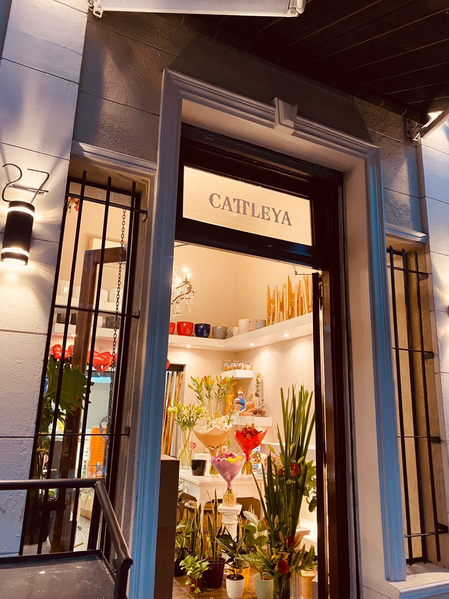
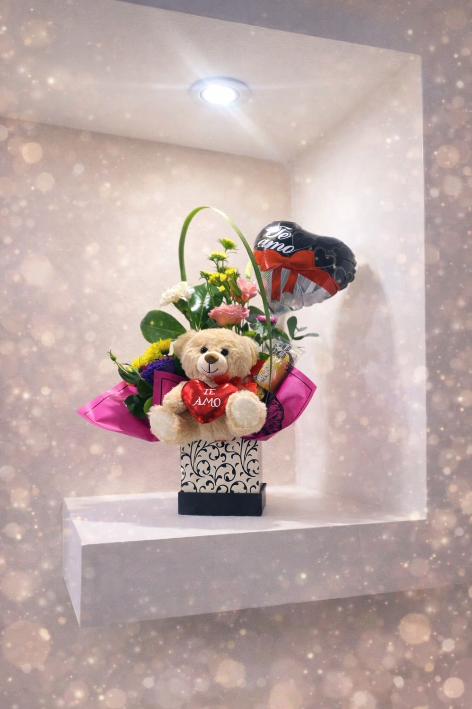
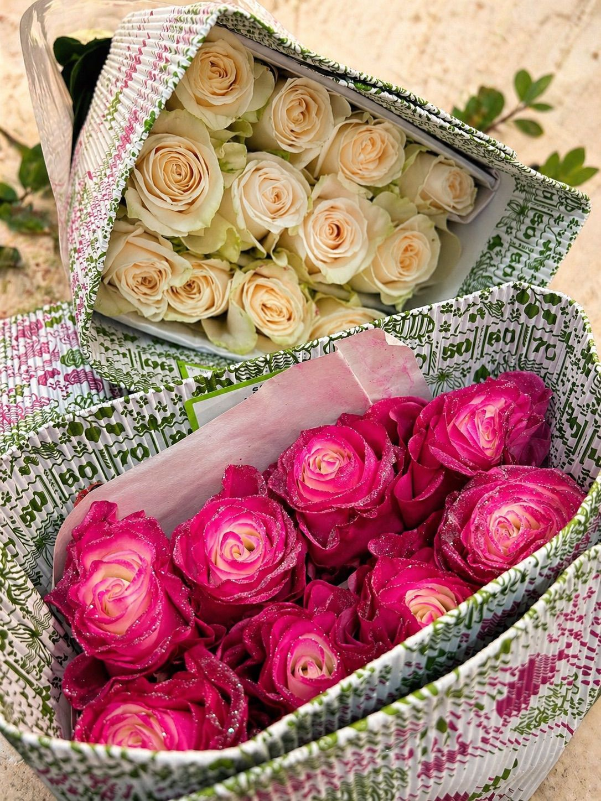
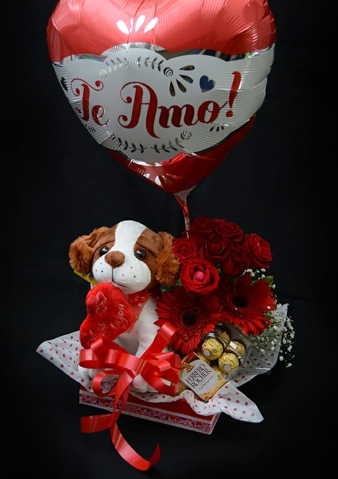
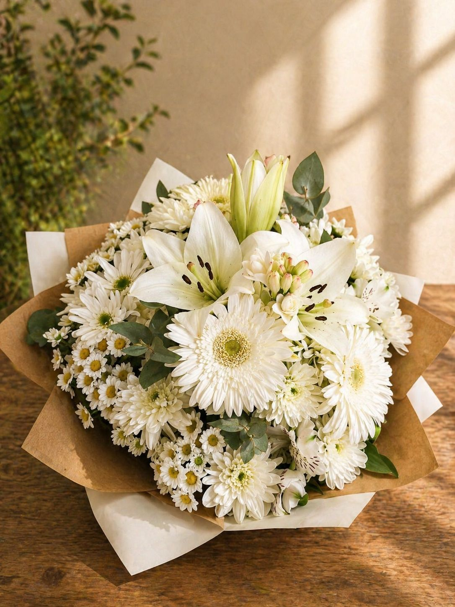
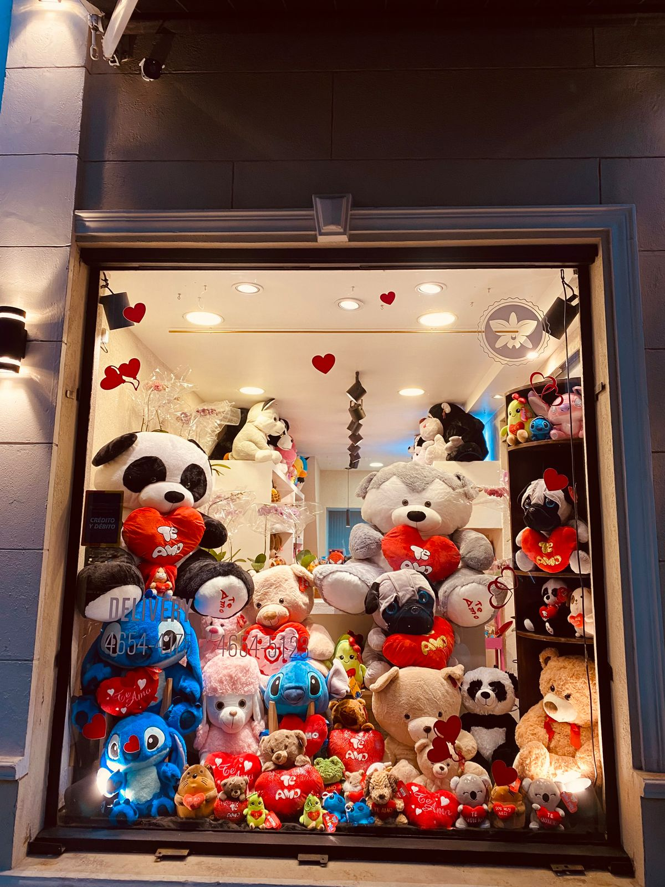

Nuestra Historia
CATTLEYA nace de la pasión por las flores y el deseo de llevar belleza a cada rincón de nuestras vidas. Desde nuestros inicios, nos hemos comprometido a entregar los arreglos florales más hermosos, frescos y cuidadosamente diseñados del mercado.
Cada flor que utilizamos es seleccionada con amor y dedicación, asegurándonos de que cumplan con los más altos estándares de calidad. Creemos que las flores no son solo plantas, son emociones, mensajes y momentos especiales condensados en un arreglo.
Nuestra Misión
Somos floristas profesionales egresados de la prestigiosa Escuela Iberoamericana de Arte Floral (EIAF), formados en técnica, teoría del color y composición armónica. Nuestra misión es transformar cada ramo en una experiencia emocional única, combinando flores de calidad premium con diseños cuidadosamente pensados y personalizados. Buscamos transmitir sentimientos auténticos en cada creación, haciendo de cada ocasión un momento especial y memorable.
Nuestros Valores
- Calidad: Solo las mejores flores seleccionadas diariamente
- Creatividad: Diseños únicos y personalizados para cada cliente
- Compromiso: Entrega puntual y excelente servicio al cliente
- Sostenibilidad: Cuidado del medio ambiente en nuestros procesos
- Pasión: Amor por lo que hacemos en cada arreglo
¿Por qué elegir CATTLEYA?
Flores Frescas
Seleccionadas diariamente de los mejores proveedores
Con Amor
Cada arreglo hecho con dedicación y cuidado
Envíos Rápidos
Entrega en 24 horas en tu domicilio
Atención WhatsApp
Consultas y pedidos por WhatsApp disponibles





